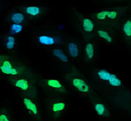
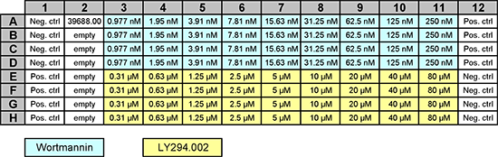

Broad Bioimage Benchmark Collection
Annotated biological image sets for testing and validation
Human U2OS cells cytoplasm–nucleus translocation
Accession number BBBC013 · Version 1
Example images
-
 Positive
Positive -
Negative
Biological application
This 96-well plate has images of cytoplasm to nucleus translocation of the Forkhead (FKHR-EGFP) fusion protein in stably transfected human osteosarcoma cells, U2OS. In proliferating cells, FKHR is localized in the cytoplasm. Even without stimulation, Forkhead is constantly moving into the nucleus, but is transported out again by export proteins. Upon inhibition of nuclear export, FKHR accumulates in the nucleus. In this assay, export is inhibited by blocking PI3 kinase / PKB signaling by incubating cells for 1 h with Wortmannin or with the compound LY294002. Both drugs are considered positive controls in the assay. Nuclei are stained with DRAQ, a DNA stain.
Images
The images were acquired at BioImage on the IN Cell Analyzer 3000 using the Trafficking Data Analysis Module, with one image per channel (Channel 1 = FKHR-GFP; Channel 2 = DNA). Image size is 640 x 640 pixels. Images are available in native FRM format or 8-bit BMP.
BBBC013_v1_images_frm.zip (77 MB)
BBBC013_v1_images_bmp.zip (31 MB)
Ground truth B
The images provided are 4 replicas of the 9-point dose curve for each of the two positive control drugs (Wortmannin and LY294002). File name structure is <channel>-<well-number>-<row>-<column>.BMP or <prefix>_<row><column>_<suffix>.frm
The platemap is a standard 96-well plate, containing 9 points of 2-fold dilutions (columns 3-11) of either Wortmannin or LY294002. Negative and positive controls have no drug and 150 nM Wortmannin added, respectively. "Empty" wells have no drug added.

The following files encodes this plate map in the format expected by CellProfiler's LoadText module:
- All samples
- BBBC013_v1_platemap_all.txt
- Wortmannin-treated samples (rows A–D) only
- BBBC013_v1_platemap_wortmannin.txt
- LY294002-treated samples (rows E–H) only
- BBBC013_v1_platemap_ly294002.txt
The Z'-factor can be calculated either combining both drugs as positive controls, or for each of the two drugs separately. The V-factor should definitely be calculated separately, because the two drugs have different dose response curves.
Published results using this image set
| Z'-factor Wortmannin | Z'-factor LY294002 | Z'-factor both | V-factor Wortmannin | V-factor LY294002 | Citation |
|---|---|---|---|---|---|
| 0.91 | 0.86 | 0.84 | Carpenter et al., Genome Biol., 2006 | ||
| 0.94 | 0.90 | 0.86 | 0.88 (A549) | Logan and Carpenter, J. Biomol. Screening, 2010 |
Files to reproduce results in Logan and Carpenter, J. Biomol. Screening, 2010 (includes CellProfiler pipelines and metadata):
BBBC013_reproduce_logan.zip (5.4 MB)For more information
These images were originally gathered for Ilya Ravkin's Invitation to Participate in the Comparison of Image Analysis Algorithms for Intracellular Screening.
Recommended citation
"We used image set BBBC013v1 provided by Ilya Ravkin, available from the Broad Bioimage Benchmark Collection [Ljosa et al., Nature Methods, 2012]."
Copyright
 The BBBC013 images
are licensed under a
Creative Commons Attribution 3.0 Unported License
by
Ilya Ravkin.
The BBBC013 images
are licensed under a
Creative Commons Attribution 3.0 Unported License
by
Ilya Ravkin.